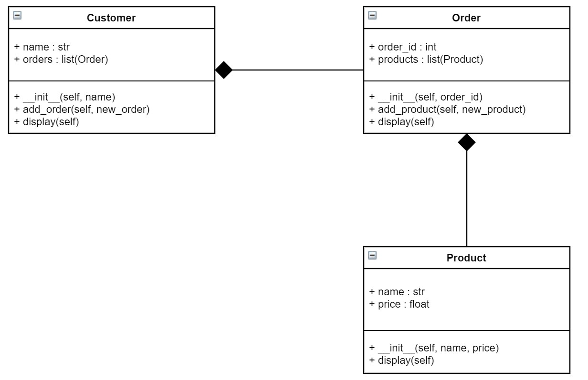

04 Prepare : Additional Reading
The following is additional reading regarding object composition which you may optionally use.
Object Composition in Python
In assignment 4, there are 3 classes described: Product, Order, and Customer. If three seperate engineers wrote each of these three classes, we might end up with alot of duplicated code. Perhaps the Order class would have prices and product names as member data. Perhaps the Customer class would have order numbers and even product names and prices. If a price changed, we might have to change it in 3 places! A better design would be to define a relationship between these three classes. By doing this, we could influence the implementation of the classes by the three engineers without any duplication. It's possible that we would get a result without identifying the relationships, but the odds are not in our favor as software gets bigger.
In the UML diagram below (see discussion below about UML diagrams), we show relationships between 3 simple Product, Order, and Customer classes. This UML diagram (and subsequent code) is similair to assignment 4 but it is not the same thing. This is given as a simple example. The filled in diamond means that the class HAS-A (or owns; or is composed of) the other class.
The HAS-A relationships have consequences on the diagram and the subsequently written code. Notice that because Customer HAS-A Order (and in reality its many Orders), there is member data in the Customer class + orders : list(Order). This is required! If there is a HAS-A relationship, then there must be member data in the class for it. Same thing for Order. Since there is a HAS-A relationship with Product, we have + products : list(Product)
Based only on the UML diagram above, we can create stub code (everything except the actual implementation of the functions). Notice in code below that the __init__ functions must contain the member data including the data related to the HAS-A relationship.
class Customer:
def __init__(self, name):
self.name = name
self.orders = [] # Start out with an empty list of orders
def add_order(self, new_order):
pass
def display(self):
pass
class Order:
def __init__(self, order_id):
self.order_id = order_id
self.products = [] # starts out with an empty list of products
def add_product(self, new_product):
pass
def display(self):
pass
class Product:
def __init__(self, name, price):
self.name = name
self.price = price
def display(self):
pass
As we start to implement these functions (one at a time), we start to see some potential for duplication. For example, assume we have the following written for and Order and Product classes:
class Order:
def __init__(self, order_id):
self.order_id = order_id
self.products = []
def add_product(self, new_product):
self.products.append(new_product)
def display(self):
print("ID: {}" .format(self.order_id))
print("Products:")
for product in self.products:
print("Name: {} Price: ${:.2f}" .format(product.name, product.price))
class Product:
def __init__(self, name, price):
self.name = name
self.price = price
def display(self):
print("Name: {} Price: ${:.2f}" .format(self.name, self.price))
Notice the loop in the display function of the Order class is needed to display all the products in the order. However, the print statement in the loop looks just like the print statement in the display function of the Product class. We are not reusing. We want to use product.display() in the loop instead. This will call the display function in the other class. A big benefit of object composition is enabling reuse of functions. If you have duplicated code, then you may not be taking complete advantage of your relationships between the classes.
Here is the corrected code with some test code:
class Customer:
def __init__(self, name):
self.name = name
self.orders = []
def add_order(self, new_order):
self.orders.append(new_order)
def display(self):
print("Customer: {}" .format(self.name))
print("Orders:")
for order in self.orders:
order.display()
class Order:
def __init__(self, order_id):
self.order_id = order_id
self.products = []
def add_product(self, new_product):
self.products.append(new_product)
def display(self):
print("ID: {}" .format(self.order_id))
print("Products:")
for product in self.products:
product.display()
class Product:
def __init__(self, name, price):
self.name = name
self.price = price
def display(self):
print("Name: {} Price: ${:.2f}" .format(self.name, self.price))
def main():
# 1. Test Product Class by itself
p = Product("Book", 9.95)
p.display()
print()
# 2. Test Order Class by itself
o = Order(231)
o.display()
print()
# 3. Test Customer Class by itself
c = Customer("Bob")
c.display()
print()
# 4. Add the product to the order and add the order to the customer
o.add_product(p)
c.add_order(o)
c.display()
print()
# 5. Add printer ink to the order
p1 = Product("Printer Ink", 29.99)
o.add_product(p1)
c.display()
print()
# 6. Create a new order for the customer and order the same book again
o1 = Order(232)
o1.add_product(p1)
c.add_order(o1)
c.display()
if __name__ == "__main__":
main()
The output of the test code is as follows:
Name: Book Price: $9.95
ID: 231
Products:
Customer: Bob
Orders:
Customer: Bob
Orders:
ID: 231
Products:
Name: Book Price: $9.95
Customer: Bob
Orders:
ID: 231
Products:
Name: Book Price: $9.95
Name: Printer Ink Price: $29.99
Customer: Bob
Orders:
ID: 231
Products:
Name: Book Price: $9.95
Name: Printer Ink Price: $29.99
ID: 232
Products:
Name: Printer Ink Price: $29.99
UML Diagrams
UML diagrams are useful for designing software. UML is not Python code, but it can be used to write code in Python, Java, C++, etc. Each 3 part box contains the following:
The first box has the class name.
The second box has member data. The "+" means the data is public. All data in Python is public. The text after the colon is the data type. Even though we don't need to show the data type in Python, its useful to know the data type when looking at the picture. It also helps us write the code correctly if we know ahead of time what the data type should be. In Python, each member data will show up in the
__init__function with aself.in front of it.The third box has member functions. The text in parentheses show the input parmaeters sent to the function. To help use remember, we should put
selfas the first parameter.
Additional Reading
For additional reading, consider these websites (these sites also talk about inheritance and encapsulation which we will discuss in future lessons):